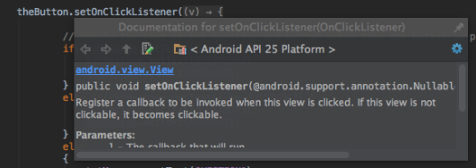

11 Prepare : Reading
Javadoc
Objectives
Understand how the Javadoc system can make your code more usable.
Understand how to use Javadoc comments.
Introduction
Javadoc is a tool that can parse your code for specially formatted comments and use those comments to generate documentation.
Javadoc comments are also used to provide the text you see in IDE's such as IntelliJ and Android Studio when you are auto-completing your code.
(You can activate this feature in IntelliJ/Android Studio under Settings->Editor->General by checking the "Show quick documentation on mouse move" checkbox.)
For example, here's a Javadoc comment from our NSALoginController class:
/**
* This function takes the password from the {@link User} class and hashes it.
* As a side-effect, the original password value is removed for security purposes.
* @param user The user whose password needs to be hashed.
* @exception Exception If there is a problem with the chosen hash function.
*/
Android Studio and InteliJ will both auto-generate the skeleton of a Javadoc comment for you if you position your cursor directly above the class or method you want to document and type: /** then press Enter.
This principle of structured code documentation is used in most major langauges, from C# to perl. And like the Javadoc system, tools exist for these other languages to autogenerate documentation from those comments.
Reading
Read the following resources:
-
Read about the Javadoc system.
-
Read this overview of the Javadoc tags and attributes you can use.
-
Read these specific guidelines for using Javadoc comments in the Google Java style guide.
-
Read this Stack Overflow post on when to include Javadoc comments.
-
Read this Stack Overflow post containing tips on how to write good Javadoc comments.
-
Read this Stack Overflow post discussing thoughts on whether non-public methods should have Javadoc comments.
Reading Quiz
Don't forget to take the Reading Quiz in I-Learn. This quiz can be taken as many times as you like, but you must score at least 90% to pass. If you fail the quiz, review the relevant parts of the reading and try again.